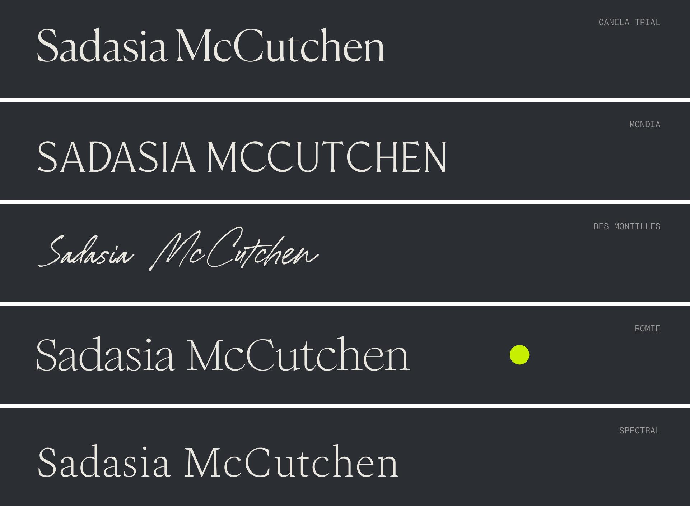
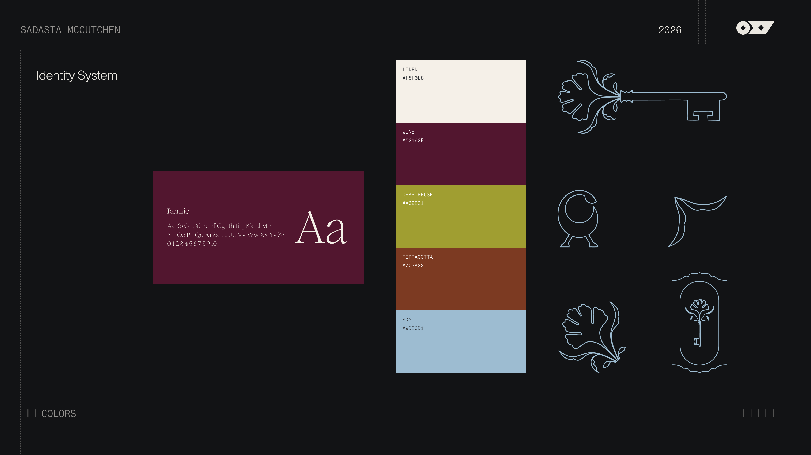
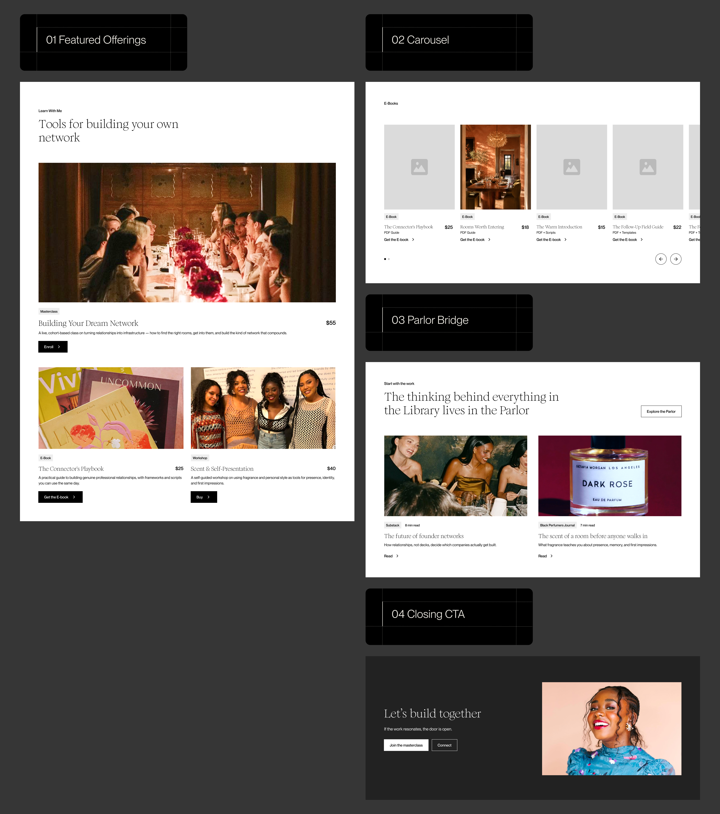

PRODUCT DESIGN INTERNSHIP · OXY · 2026

Oxy Design Agency
Over 4 months at Oxy, a Phoenix-based design agency, I've worked as a product design intern across client engagements spanning UX research, competitive analysis, information architecture, and visual design.
The two projects below share a thread: an investor, writer, and community builder with five careers and no website at all, and a luxury aviation studio reading like a SaaS product. Different problems, same job: closing the gap between the work and the story told about it.
Sadasia McCutchen is an investor at SignalFire who previously worked at Google. She writes, builds communities, and works in fragrance and fashion. The through-line she named was relationship infrastructure: not five careers, one practice of putting aligned people in the same room and keeping them there. The site had to show the range as a single practice, not a list of accomplishments.
I wasn't on the discovery call, so the first three moodboards came from the file that came out of it: sticky notes and fragments. None of them felt like her, and she said so. Warm Authority came closest: cream, terracotta, natural light. But she wanted more color, more plant life, more play, and hearing her talk through the gap gave me what the notes never could.

Round two pushed exactly there. Bright Authority took Warm Authority's foundation and turned the color up: jewel tones, saturated portraiture, botanicals rendered like stained glass. She chose it over email, calling it the perfect combination playful, expert, and relatability she wanted to evoke. That was the exact tension the brief had been circling, and it took a miss to find it.

Sadasia's name was made up, given with intention, and built to go far. There was nothing to design on top of it, so I tested five treatments in high-contrast editorial serifs and let the letterforms carry the identity.

Romie carries the whole site. Sadasia loved the unique serif and wanted one voice throughout, so the range comes from weight and italics rather than a second typeface. The palette of linen, wine, chartreuse, terracotta, and sky holds jewel tones without going heavy. Two marks round it out: a key, because opening doors for people is what she actually does, and a flower, from her love of fragrance and plants.

I wireframed all eight pages of the site across three rounds, each round adding pages and real imagery so stakeholders could picture the site as close to hi-fi as possible.

The Library page was the structural problem. It's the only commerce surface, and the products weren't final when I wireframed it, so the structure had to flex: a couple of featured offerings, a carousel for smaller products, a bridge to the Parlor for visitors who want her free thinking before they buy, and a closing path to the masterclass or to connect. The Foyer and Parlor carried positioning and publication weight; the Library had to carry uncertainty.

I presented three hero directions in round one but I used the same portrait across all three. My supervisor caught it: with identical imagery and image treatment, the directions read as variations, not choices. Round two gave each direction its own image treatment so they felt completely visually distinct.
1A held her portrait below the fold, and 1B ran it full-bleed with her name breaking the grid like a magazine cover. Both lost for the same underlying reason: 1A hid her on a site where she's the reason anyone visits, and 1B put her name above her when the point is what she does with it.


1C frames the portrait inside an arch, so the room concept shows up in the structure of the page rather than in the copy. Sadasia chose it for the combination of the archway, the key, and the floral.

In the style tile the arch framed one portrait. In the homepage it crops the dinner photograph, both call-to-action portraits, and all four rooms in the dropdown, so the concept holds without being explained. The key anchors the footer and the keyhole sits on the sky call to action, both carried over from directions she passed on.

Then the arch stopped being a crop and became a surface. Fabric texture sits behind her in the hero and the closing call to action, and lines the Choose a Room dropdown: upholstery, drapery, backdrops, and a nod to the fashion side of her work. Editorial photography got a riso treatment.
Texture needed a limit, so I set one: brand surfaces and editorial imagery only. Her portraits and the products stay untreated, because a filter on a face reads as a filter on the credibility behind it.
Notes from a discovery call give you what the client said. They can't give you what she lit up about. The first moodboard round missed because I designed from a transcript; the second landed because I designed from a conversation.
One meeting fixed what a second round of research wouldn't have.
Oxy Aero is Oxy's own venture, a private aviation design studio built around designing the entire client experience, from the moment someone gets a text to when they step off the plane. The website didn't reflect any of that. In a kickoff with Anthony, Oxy's founder, the direction was clear: the site needed to feel like Amangiri, not polished or commercially clean but so confident it doesn't need to explain itself. The current site read like a SaaS company. My job was to figure out why, understand where the bar actually was, and help close the gap.
I built a moodboard organized around three ideas Anthony kept returning to: bespoke aviation interiors, inaccessible minimalism, and obsessive craft. The framing that stuck: "Luxury that doesn't explain itself. You have to already know to be there."


I analyzed Winch Design, Singer Vehicle Design, and Ago Interiors across seven dimensions. All three are bespoke studios designing high-consideration objects for wealthy clients at the level Oxy Aero is aiming for.
Winch framed project work around the brief and outcome, not the client's identity, and that became the model for presenting Abogada Air. Singer showed what a brand built entirely around philosophy looks like; their menu labels alone make it feel like a world. That shaped the navigation rethink: "Contact Us" to "Inquire," "Gallery" to a named project, service lists to something with a point of view.
Oxy Aero had none of what these three had. The site communicated capability but not character.

I audited the entire site and logged 28 observations across every section, color coded by priority, with competitor screenshots embedded inline as visual evidence. The hero section alone had six. The findings fell into three buckets.
The conclusion: nothing needed to be added. The content needed to build trust already existed on the site. It just wasn't doing anything. This wasn't a rebuild. It was a translation problem.

Oxy Aero had only one real client, which meant there wasn't enough photography to support a site that needed to feel like an established luxury studio. The problem wasn't just quantity. Using the wrong images would undermine everything the redesign was trying to signal. I wrote a prompt document from scratch to define the visual language for a 14-image AI library.
The anti-rules mattered as much as the rules. The difficulty is that AI imagery defaults to exactly what luxury can't be: overlit, posed, symmetrical, eager to impress. The prompt document was less about generating images than about systematically suppressing those instincts. A brand signaling Amangiri-level exclusivity cannot use imagery that's trying to sell something. The images had to assume you already belonged there.

I designed three hero directions. All three shared the same updated navigation, Inquire replacing Contact Us, Our Work, Philosophy, and Services, and the same core copy. Directions 1A and 1C were both dismissed, one too warm and inviting, one too restrained to hold presence.
Direction 1B made a case at every level. 'Inquire' replaces 'Contact Us', following the pattern luxury brands use to signal that not everyone gets in. The image is a full-bleed single-window jet from the AI library; the old hero showed a commercial aircraft, undoing everything the copy said. The typography and color come straight from Oxy's design system so Oxy Aero would read as part of the family. What's new is the register: restraint, silence, and exclusivity.


Andrew, head of growth, and Spencer Ramirez, Oxy's creative director, reviewed all three directions and both landed on 1B. Spencer's reasoning: it was the closest to the Oxy brand. That was the test all three directions had to pass twice: staying inside Oxy's existing design system while capturing a luxury standard that was never written down, only named in kickoff as "Amangiri."
When Anthony said Amangiri, he wasn't describing an aesthetic. He was describing a standard. Figuring out what that standard actually meant in practice and then building toward it was the most useful thing this project taught me. Luxury at that level doesn't explain itself, and neither should the design. That's not something you can get from a brief alone.
You have to look at enough of the right references until the pattern becomes impossible to miss.